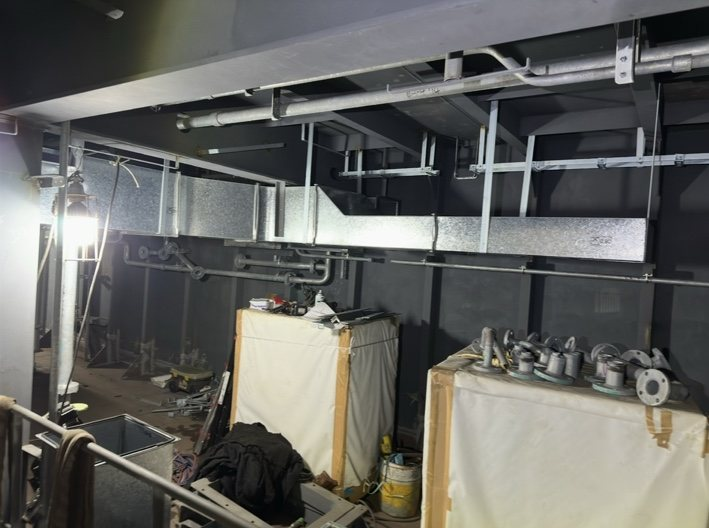
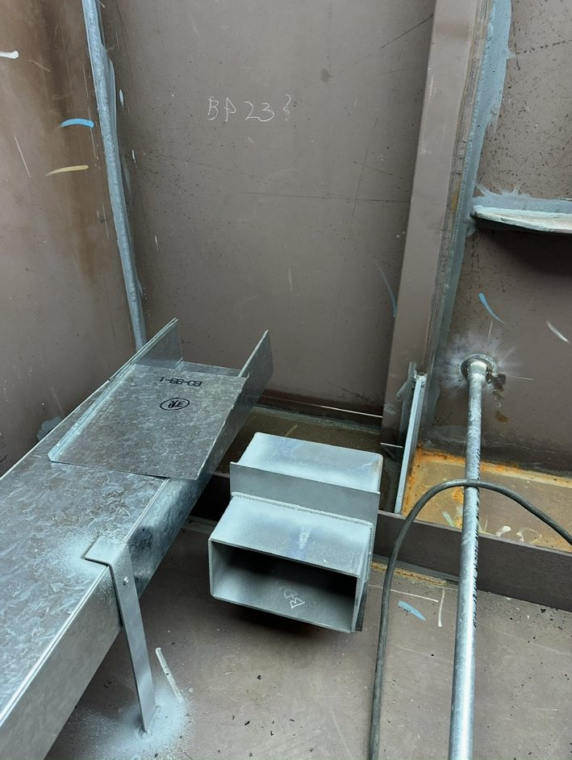
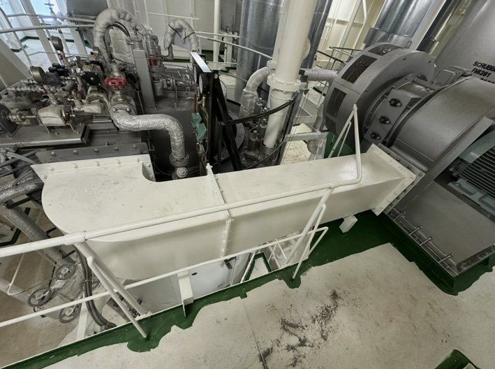

SERVICE
事業内容
船舶や設備の断熱、保温・保冷と、それに伴う板金の加工・施工が本業です。ダクト取付工事にも対応しています。
01
INSULATION / THERMAL & COLD
断熱・保温・保冷工事
船舶などの断熱工事と、保温・保冷工事を行っています。配管や設備の保温にも対応しています。
- 断熱工事
- 保温・保冷工事(配管・設備の保温を含む)


02
SHEET METAL
板金加工・施工
断熱・保温に伴う板金の加工・施工を行っています。保温材の外側を板金で覆うラッキングにも対応しています。
配管の曲がりを覆うパックエルボは、角度・呼び径・防熱厚などに応じてCADで作図し、板金加工・組立、現場取付まで対応します。現場で使う板金の加工は、自社の加工場で行っています。
- 断熱・保温に伴う板金の加工・施工
- ラッキング(保温材の外側を板金で覆う施工)
- パックエルボの作図・加工・組立・現場取付


03
DUCT INSTALLATION
ダクト取付工事
ダクトの取付工事にも対応しています。
ご相談の際は
取付の場所や数量、工期など、分かる範囲の情報をお知らせください。内容を確認したうえで、対応できるかどうかをお伝えします。




FLOW
ご相談の流れ
お問い合わせ
工事の内容や場所、時期など、分かる範囲でお知らせください。
内容・工程の確認
図面や数量、工期が分かる資料があると、判断がしやすくなります。
対応可否・納期のご連絡
対応できるかどうかと納期を事前に判断してお伝えします。
長崎を拠点にしています。県外の工事も、内容や条件によってご相談いただけます。
CONTACT
工事のご相談・お問い合わせ
断熱・保温・保冷や板金のご相談を受け付けています。図面や数量、工期が分かる資料があると、判断がしやすくなります。